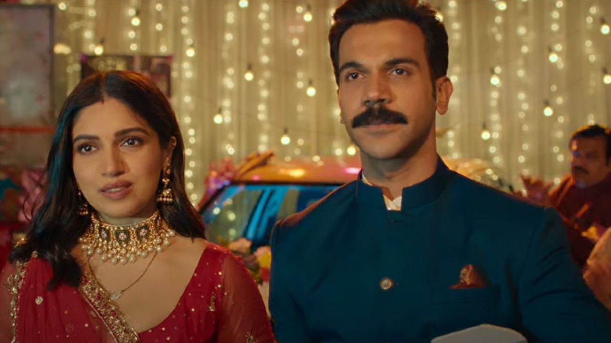
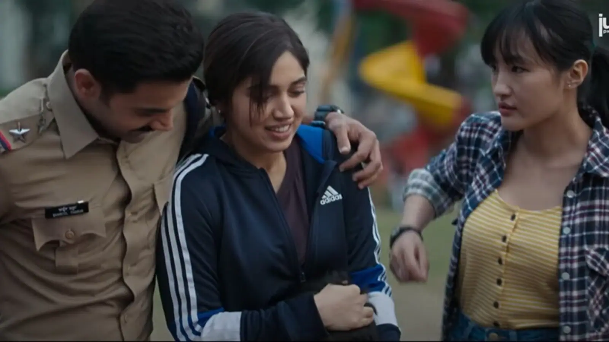

- Badhaai Do -
-หนังที่ว่าด้วยการแต่งงานลวงระหว่างตำรวจเกย์ Shardul (Rajkummar Rao) กับครูเลสเบียน Sumi (Bhumi Pednekar) เพื่อหนีจากความกดดันของครอบครัวและสังคม
*ถ้ามีข้อมูลที่ผิดพลาดตรงไหนก็ขออภัยด้วยนะครับ พร้อมน้อมรับและจะนำไปปรับปรุงครับ*
-ถึงแม้จะเป็นหนังตลกแต่ก็แฝงไปด้วยประเด็นสังคมของอินเดียที่น่าอึดอัดมากๆ ไม่ใช่แค่เรื่อง LGBTQ+ เท่านั้น แต่รวมถึงประเด็นชายเป็นใหญ่ที่ฝังลึกอยู่กับสังคมอินเดียมาอย่างยาวนานด้วย ช่วงต้นเรื่องเราจะได้เห็นชีวิตและครอบครัวของทั้ง Shardul และ Sumi ตัดสลับไปมา ทั้งคู่ต่างก็ต้องแบกรับความหวังจากทางบ้านที่จะต้องแต่งงานมีครอบครัวมีลูกในวัย30+ มันเป็นความอึดอัดของทั้งตัวละครและคนดู แต่เมื่อทั้งคู่โคจรมาเจอกันและคิดแผนการแต่งงานลวงนี้ขึ้นมาได้มันก็เหมือนจะเป็นทางออกที่ไม่แย่สักเท่าไหร่เมื่อเทียบกับสถานการณ์ที่ทั้งคู่ต้องพบเจออยู่ในตอนนี้ โดยพาร์ทหลังจากแต่งงานจะเห็นได้เลยว่าทั้งคู่มีอิสระขนาดไหนที่จะได้ย้ายออกไปจากบ้านและจะรักใครก็ได้โดยที่ไม่ต้องมีใครมาบังคับ แต่ในขณะเดียวกันมันก็ยังมีความอึดอัดที่จะต้องคอยปิดบังความลับนี้อยู่ตลอดเวลา แต่ในการใช้ชีวิตคู่แบบหลอกๆนี้เองที่นำมาสู่เรื่องราวความสัมพันธ์ของคนหัวอกเดียวกันที่จะคอยช่วยเหลืออีกฝ่ายและค้นหาคนที่ใช่ไปพร้อมๆกัน
- Section 377- ซึ่งเป็นกฎหมายที่ว่าด้วยการรักร่วมเพศนั้นเป็นดั่งอาชญากรรมและสมควรได้รับโทษจำคุกถึง10ปี โดยกฎหมายนี้ได้ถูกนำมาใช้ตั้งแต่ปี 1861 ซึ่งเป็นช่วงเวลาที่อังกฤษยังปกครองอินเดียอยู่ โดยกล่าวว่าการรักร่วมเพศนั้นเป็นการกระทำที่ผิดธรรมชาติและต้องถูกทำโทษอย่างสาสม ถึงแม้ว่าอินเดียจะยกเลิกกฎหมายนี้ ไปตั้งแต่ วันที่ 6 กย. 2018 แล้ว แต่ก็ปฎิเสธไม่ได้เลยว่าด้วยสังคม ศาสนา และวัฒนธรรมอันเก่าแก่ของอินเดียนั้นก็ทำให้เป็นเรื่องยากสำหรับชาว LGBTQ+ หลายๆคนที่จะเปิดตัวต่อครอบครัวและสังคมอยู่ดี โดยแพทย์บางรายในอินเดียยังวินิจฉัยว่ามันเป็นโรคหรือความผิดปกติที่จะต้องรักษาให้หายซะด้วยซ้ำ แต่ถึงอย่างนั้นจำนวนประชากร LGBTQ+ ในอินเดียกลับมีมากกว่า 2.5ล้านคน หรือคิดเป็น 3% หรือมากกว่า จากประชากรทั้งหมด โดยข้อมูลนี้ได้มาจากการลงทะเบียนรายชื่อกับทาง Ministry of Health and Family Welfare ซึ่งเป็นกระทรวงที่มีหน้าที่ในการดูแลเรื่องของนโยบายสุขภาพและการวางแผนครอบครัวของชาวอินเดีย และอย่าลืมว่ายังมีประชากรที่ไม่ได้ลงทะเบียนกับทางกระทรวงอีกตั้งเท่าไหร่ 
-Lavender Mariage- คือการแต่งงานตามกฎหมายของชาย-หญิง เพื่อปกปิดรสนิยมทางเพศของทั้งคู่ต่อสังคมและครอบครัว คำนี้เริ่มมีการใช้มาตั้งแต่ช่วงต้นศตวรรษที่ 20 ซึ่งนักแสดงหรือคนที่มีชื่อเสียงในสังคมที่มีรสนิยมชอบเพศเดียวกันในสมัยนั้นมักจะใช้วิธีนี้เพื่อหลีกเลี่ยงกระแสสังคมและการมีปัญหากับทางสตูดิโอรวมถึงการป้องกันไม่ให้หน้าที่การงานและชื่อเสียงต้องเสียไปพร้อมๆกันด้วย
โดยสีลาเวนเดอร์ในสมัยนั้นมักถูกมองว่าเป็นสีที่มีความเกี่ยวข้องกับ Homosexual นั่นเอง
ถึงอย่างนั้น ก็ยังมีนักแสดงบางคนที่ไม่ยอมจำนนต่อทางสตูดิโอซึ่งบังคับให้เค้าแต่งงานแบบหลอกๆกับหญิงเพศตรงข้ามเพื่อรักษาหน้าที่การงานของตนเอาไว้ ชายคนนั้นคือ Charles William Haines ซึ่งเป็นนักแสดง Hollywood ที่มีชื่อเสียงจากการแสดงหนังเรื่อง Three white fools (1923) โดยเค้าเลือกที่จะจบอาชีพการแสดงของตนลงและอยู่กินกับกะลาสีเรืออย่าง Jimmy Shields เป็นเวลาถึง 47ปี
และนอกจากนี้การแต่งงานแบบลาเวนเดอร์ก็ยังเป็นที่แพร่หลายในประเทศจีนรวมถึงอินเดียด้วย 
-Patriarchy- หรือสังคมที่ชายเป็นใหญ่ และมีสิทธิพิเศษเหนือกว่าเพศอื่นๆ ไม่ว่าจะเป็นบทบาททางสังคม ธุรกิจ หรือ การเมือง โดยอินเดียเองก็ถือว่าเป็นหนึ่งในประเทศที่มีความเหลื่อมล้ำทางเพศสูงเป็นอันดับต้นๆของโลก ถึงแม้ว่าในปัจจุบันอะไรหลายๆอย่างจะเริ่มดีขึ้นแล้ว แต่ก็ยังมีคนอินเดียทั้งชายและหญิงจำนวนมากที่ยังเห็นด้วยกับการแบ่งแยกเพศกับหน้าที่อย่างชัดเจน หรือแม้แต่การที่เปิดโอกาสให้เพศชายมีสิทธิ์ในการตัดสินใจสิ่งต่างๆได้อย่างชอบธรรม โดยจากการรีเสิร์ชของ PEW research center หน่วยงานวิจัยของสหรัฐที่ทำการสำรวจในเรื่องของสังคมวิทยา และวิเคราะห์ข่าวสารต่างๆนั้นได้รายงานว่า ผู้คนเห็นด้วยกับการให้เพศหญิงเป็นฝ่ายดูแลลูกอยู่ที่บ้านมากถึง 34% ในขณะที่ผู้ชายคิดเป็นแค่ 3% เท่านั้น ในขณะเดียวกันตัวเลขของความนิยมให้ผู้ชายเป็นฝ่ายเดียวที่ออกไปทำงานหาเงินนั้นก็มีมากถึง 43% เลยทีเดียว
-ซึ่งเราก็จะได้เห็นหลักการชายเป็นใหญ่นี้แทรกอยู่บ่อยๆในหนัง แม้แต่ในหมู่ของ LGBTQ+ เอง เพศชายก็ยังดูเหมือนจะได้รับอภิสิทธิ์อยู่บ้างเช่นกัน
-สุดท้ายนี้เราก็มองว่าหนังเรื่องนี้เป็นอีกหนึ่งก้าวสำคัญของ Bollywood และชาว LGBTQ+ ในการเรียกร้องความเท่าเทียมและความเข้าใจต่อคนในชุมชนนี้เช่นกัน. :)
#BadhaaiDo
Source: https://timesofindia.indiatimes.com/india/what-is-section-377/articleshow/66067994.cms
https://hmong.in.th/wiki/Lavender_marriage
https://historydaily.org/famous-hollywood-lavender-marriages
https://www.pewresearch.org/religion/2022/03/02/gender-roles-in-the-family/
ผู้เขียน: ประยศ ปลอดภัย (Red)
ภาพประกอบ: ประยศ ปลอดภัย (Red)